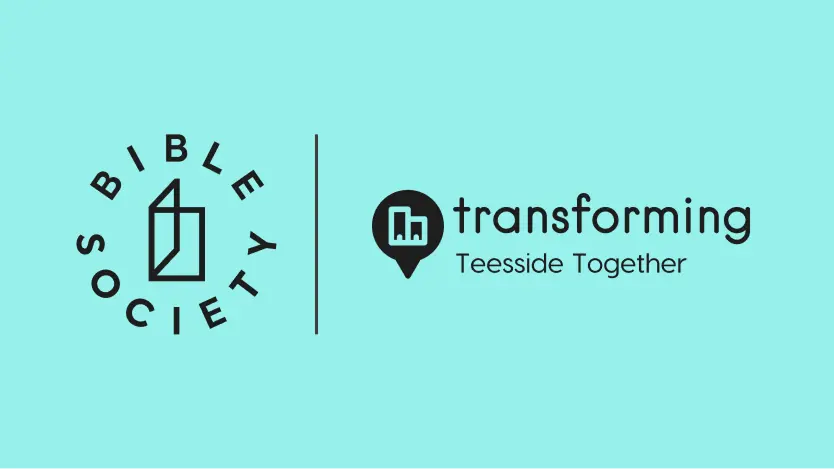

Sign up
Find a Bible Conversation near you

Wondering what the Bible’s actually about? And where to start with it?
If you’re new to the Bible or interested in finding out about more about it, Bible Conversations: Teesside is a place to do exactly that.
Join a Bible Conversation near youExplore the Bible
together in Teesside
Bible Conversations: Teesside is a chance to meet people, chat about the Bible and figure out how you feel about it by listening to four short Bible stories across four free sessions.
They’re hosted by local churches across Teesside – by people who don’t have all the answers, but ask the right questions to help you dig into the Bible.
It works like this:
Find a Bible Conversation near you
Meet and mingle with others interested in exploring the Bible
Listen to a short Bible story together
Share what you think about it
Come back for the next session
Some Bible Conversations are taking place as one-to-one chats between friends, colleagues, neighbours.
But here, you can sign up to a group conversation and meet others who are keen to explore the Bible – without being pressured or preached at.
Each group has: four sessions, between six and fifteen participants and two hosts to keep the conversation on track.
During each session, you’ll listen to a short story from either Luke or Acts – two books that talk about Jesus. Then, your host asks questions like:
There are no right or wrong answer. And there’s no pressure to speak either, if you’d just prefer to listen.
Meet people, chat about the Bible and figure out how you feel about it.
Bible Conversations: Teesside is your chance to explore a text that’s divided and united people for thousands of years. And it’s a chance to have your say on it.
Think of Bible Conversations: Teesside as your free taster sessions for the Bible. Join all four sessions if you fancy – or simply try one out and see if it’s for you.
Bible Conversations: Teesside is an initiative by Bible Society, in partnership with local churches in Teesside. Bible Society is a charity that operates in England and Wales, inviting people to see the Bible through fresh eyes and discover its message for themselves.
Bible Conversations: Teesside creates dedicated spaces for those interested in finding out more about the Bible to explore it in community.

Bible Conversations are all across Teesside – in pubs, cafes, churches. Find a group conversation taking place near you and take your next step with the Bible.
Find a Bible Conversation near youYou’re absolutely welcome to rock straight up to a session near you. But we recommend booking via Eventbrite, so your hosts know what number to expect and can ensure you have all the information you need ahead of meeting.
Yes, Bible Conversations are completely free. Simple as that.
When you register, you’re automatically signed up to all four sessions – but if you just want to try one out first to see if you like it, that’s absolutely fine too.
Registration is quick and easy.
Locate a Bible Conversation group that works for you via our map.
It’ll take you through to the Eventbrite page, where you can register.
Keep an eye on your inbox for any information you need once you’ve signed up. Your host will make sure you have everything you need to know – date, time, location.
Definitely – the more the merrier.
Why not share this link and invite them to sign up, so they know what to expect?
Around 45 minutes. They’ll be wrapped up by the hour.
The four stories you’ll cover during your Bible Conversation are all from the books of Luke or Acts.
The first three stories explore the character of Jesus, while the last story talks about the early days of Christianity – a religion inspired by Jesus.
Together, they act as a helpful introduction into the Bible – great if you’ve wondering where to start. But each story is stand alone and doesn’t directly follow on from the previous story, so if you can’t make week two: that’s no problem. You can still pop along to week three without feeling like you’re behind.